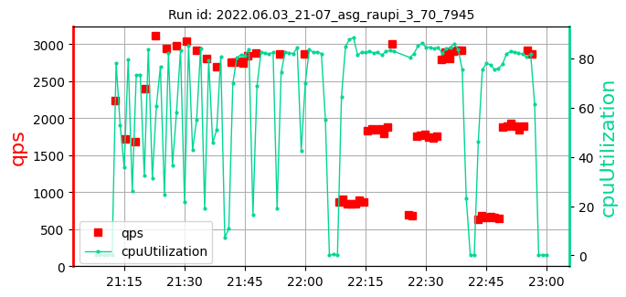
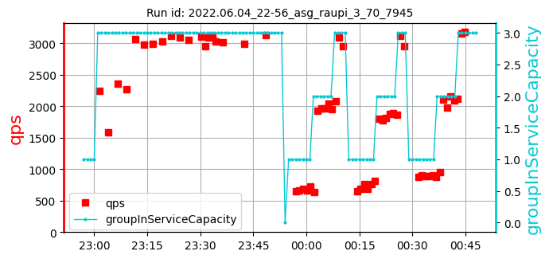

Please zoom out to see the full table.
asg_raupi_3_70_ samples: 12
date generated: 2022-06-26 20:58:06.271728
| | Overall: |
max:
759
min:
383
mean:
650
|
max:
3124
min:
2711
mean:
2919
|
max:
89.07
min:
77.39
mean:
82.63
|
max:
1710
min:
1014
mean:
1326
|
| 1. test id: 2022.05.19_07-17_asg_raupi_3_70_3f75 [raw data] | run settings: cpu=70 pods=NA treads=25 sc_min=14 warmup=90 | |
Duration s | qps | CPU % | Err |
 | | | [647, 693, 738]
693 | [2801, 2755, 2819]
2792 | [81.5, 84.02, 80.78]
82.10 | 1321 |
| 2. test id: 2022.05.27_22-27_asg_raupi_3_70_b7e2 [raw data] | run settings: cpu=70 pods=NA treads=25 sc_min=14 warmup=90 | |
Duration s | qps | CPU % | Err |
| | | [743, 476, 699]
639 | [2925, 2810, 2932]
2889 | [84.38, 83.71, 85.45]
84.51 | 1108 |
| 3. test id: 2022.05.28_01-04_asg_raupi_3_70_d071 [raw data] | run settings: cpu=70 pods=NA treads=25 sc_min=14 warmup=90 | |
Duration s | qps | CPU % | Err |
| | | [727, 641, 624]
664 | [2962, 2888, 2923]
2924 | [79.47, 81.13, 79.68]
80.10 | 1215 |
| 4. test id: 2022.06.03_08-00_asg_raupi_3_70_7945 [raw data] | run settings: cpu=70 pods=NA treads=25 sc_min=14 warmup=90 | |
Duration s | qps | CPU % | Err |
| | | [640, 624, 666]
643 | [2942, 2932, 2966]
2947 | [82.17, 82.05, 82.44]
82.22 | 1216 |
| 5. test id: 2022.06.03_10-33_asg_raupi_3_70_7945 [raw data] | run settings: cpu=70 pods=NA treads=25 sc_min=14 warmup=90 | |
Duration s | qps | CPU % | Err |
| | | [657, 630, 611]
633 | [2790, 2711, 2815]
2772 | [83.25, 84.03, 77.39]
81.56 | 1616 |
| 6. test id: 2022.06.03_21-07_asg_raupi_3_70_7945 [raw data] | run settings: cpu=70 pods=NA treads=25 sc_min=14 warmup=90 | |
Duration s | qps | CPU % | Err |
|  | | [759, 443, 665]
622 | [2884, 2871, 2873]
2876 | [82.21, 82.28, 82.93]
82.48 | 1413 |
| 7. test id: 2022.06.04_00-20_asg_raupi_3_70_7945 [raw data] | run settings: cpu=70 pods=NA treads=25 sc_min=14 warmup=90 | |
Duration s | qps | CPU % | Err |
| | | [666, 710, 628]
668 | [2903, 2830, 2827]
2854 | [80.6, 81.24, 81.43]
81.09 | 1710 |
| 8. test id: 2022.06.04_03-45_asg_raupi_3_70_7945 [raw data] | run settings: cpu=70 pods=NA treads=25 sc_min=14 warmup=90 | |
Duration s | qps | CPU % | Err |
| | | [729, 701, 684]
705 | [3035, 3021, 2936]
2997 | [82.72, 80.8, 81.47]
81.66 | 1312 |
| 9. test id: 2022.06.04_07-17_asg_raupi_3_70_7945 [raw data] | run settings: cpu=70 pods=NA treads=25 sc_min=14 warmup=90 | |
Duration s | qps | CPU % | Err |
| | | [644, 689, 672]
668 | [3062, 3046, 2983]
3030 | [81.46, 82.76, 84.11]
82.78 | 1014 |
| 10. test id: 2022.06.04_18-54_asg_raupi_3_70_7945 [raw data] | run settings: cpu=70 pods=NA treads=25 sc_min=14 warmup=90 | |
Duration s | qps | CPU % | Err |
|  | | [604, 636, 620]
620 | [3012, 3045, 2990]
3016 | [82.73, 80.73, 84.27]
82.58 | 1449 |
| 11. test id: 2022.06.04_20-54_asg_raupi_3_70_7945 [raw data] | run settings: cpu=70 pods=NA treads=25 sc_min=14 warmup=90 | |
Duration s | qps | CPU % | Err |
| | | [639, 383, 668]
563 | [2936, 2802, 2938]
2892 | [79.49, 88.66, 89.07]
85.74 | 1312 |
| 12. test id: 2022.06.04_22-56_asg_raupi_3_70_7945 [raw data] | run settings: cpu=70 pods=NA treads=25 sc_min=14 warmup=90 | |
Duration s | qps | CPU % | Err |
| |  | [659, 699, 681]
680 | [3017, 2991, 3124]
3044 | [86.62, 83.95, 83.82]
84.80 | 1222 |
asg_raupi_3_70_ samples: 12
date generated: 2022-06-26 20:58:06.271728
| | Overall: |
max:
759
min:
383
mean:
650
|
max:
3124
min:
2711
mean:
2919
|
max:
89.07
min:
77.39
mean:
82.63
|
max:
1710
min:
1014
mean:
1326
|